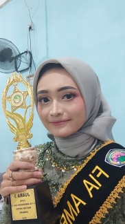

Haiiii.... Kenalin nih namanya Hibatin Wafiroh, kalo panggilannya
banyak bett menurutku, bisa dipanggil Firaaa, Hibhib, Batin, Hibatin
dan jangan lupa Ilaaa. Dia pada tanggal 5 Mei 2023 udah 20thn nihhh,
Cieeee-cieeee🥳🥳🥳. BTW dia ini jadi Brand Ambasador buat
fakultasnya gesss, wishhh kereen bangettt🛐🛐. Tapi sekarang dia
lagi sakittt TBC 🥺🥺, kasihann yaaaa, ku doa in semoga semester
depan udah sembuh totall,trus bisa senyumm, bisa ngemil yang
banyakkk, bisa belajar lagi, dan banyakk bangett. BTW ilaaa ni udah
jadi onti gessss Congrats yaaaa ilaaaa!! keturutan juga punya
ponakan laki-lakii🥳🥳. Kan ilaaa belum pernah ngrasain jadi kakak
yang ngasuh adek kecil kannn, kesempatan nihhh. Nanti jangan lupa
digendongii, di liling, dikeloni, wahhh pokoknya kalo ada adek kecil
pasti sueruuuu. Kalo aku sih kalo ada anak kecil pingin banget
nguleng pipinyaaa trusssssğŸ˜ğŸ˜, coba ini aku aja atau ilaaa juga
begutu, pingiiinnn nguleng pipinya adekkkkğŸ˜ğŸ˜